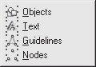
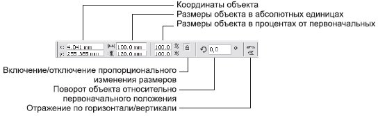
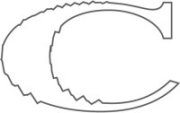

Лекция 6: Выделение и редактирование объектов
6.1. Основной инструмент выделения Pick (Выбор)
Главный инструмент программы. Расположен в верхней части панели графики. При выборе этого инструмента указатель мыши приобретает вид черной стрелки:. Основная его функция — выделение и преобразование объектов (например, преобразования узлов векторных фигур и кадрирования).
Выделять объекты можно двумя способами: щелкая на них или обводя их рамкой выделения.
В первом случае для выделения нескольких объектов нужно удерживать нажатой клавишу Shift. Если при нажатой клавише Shift щелкнуть на уже выделенном объекте, выделение этого объекта снимется.
Щелчок при нажатой клавише Ctrl на объекте, входящем в группу, позволяет выделить элемент группы, не разгруппировывая ее.
Во втором случае можно одновременно выделить несколько объектов, расположенных в одной области окна документа.
Для этого нажмите левую кнопку мыши и, не отпуская ее, переместите указатель в другую точку экрана. Появится пунктирный прямоугольник, называемый рамкой выделения. Отпустите кнопку мыши. Все объекты, которые полностью попали в рамку, окажутся выделенными.
Если какая-нибудь часть документа осталась невыделенной, это могло произойти по следующим причинам:
объект частично не поместился в рамке выделения;
объект заблокирован командой Arrange \Rightarrow Lock Object (Расположение \Rightarrow Заблокировать объект);
объект находится на заблокированном слое, то есть на слое, который нельзя редактировать.
Выделение объектов с помощью команд меню
Подменю Edit/Select All (Правкa/Выделить все)
Подменю Select All (Выделить все) используется для одновременного выделения однотипных объектов (рис. 6.1).
Рис. 6.1. Подменю Select All (Выделить все)
Подменю Select All (Выделить все) содержит следующие команды:
Objects (Объекты) — выделяются все объекты документа;
Text (Текст) — все текстовые объекты документа;
Guidelines (Направляющие) — все направляющие линии документа;
Nodes (Узлы) — все узлы выделенного объекта.
Подменю Edit/Find and Replace (Правка/Найти и заменить)
В подменю Find and Replace (Найти и заменить) собраны команды поиска и замены объектов по заданным признакам (рис. 6.2).
Подменю Find and Replace (Найти и заменить) содержит следующие команды:
Find Objects (Найти объекты) — позволяет искать объекты определенного типа,структуры, цвета и т. д. При этом открывается диалоговое окно со множеством параметров. Набор признаков, по которым производится поиск, можно сохранить в виде файла, чтобы повторить поиск в будущем;
Рис. 6.2. Подменю Find and Replace (Найти и заменить)
Replace Objects (Заменить объекты) — заменяет атрибуты объектов определенного типа. Возможны четыре варианта замены:
Replace a color (Заменить цвет) — таким образом можно заменить, например, белую заливку всех объектов на черную;
Replace a color model or palette (Заменить цветовую модель или палитру) —используется, если нужно преобразовать, например, все RGB-объекты в CMYK или присвоить всем цветам наиболее близкие им PANTONE-эквиваленты;
Replace outline pen properties (Заменить параметры обводки) — заменяются все параметры обводки, кроме цвета;
Replace text properties (Заменить атрибуты текста) — позволяет изменить гарнитуру, начертание и кегль текста сразу во всем документе;
Find Text (Найти текст) — поиск заданного фрагмента текста;
Replace Text (Заменить текст) — позволяет заменить определенный фрагмент текста любым другим;
Общее трансформирование объектов
Преобразование с помощью инструмента выделения Pick (Выбор)
Простейший вид преобразования — это перемещение. Для этого достаточно при активном инструменте Pick (Выбор) щелкнуть на объекте левой кнопкой мыши и,не отпуская ее, переместить указатель в другое место — объект последует за указателем.
Если при этом удерживать клавишу Ctrl, перемещение будет происходить только вдоль горизонтали или вертикали.
Перемещение — это не единственный вид преобразования, выполняемый с помoщью инструмента Pick (Выбор).
Выделенный объект или несколько объектов окружены черными маркерами. Крестик обозначает геометрический центр выделения (рис. 6.3).
Рис. 6.3. Маркеры вокруг выделенного объекта
ВНИМАНИЕ.Если маркеры имеют вид замочков, значит выделенный объект заблокирован командой Arrange \Rightarrow Lock Object (Расположение \Rightarrow Заблокировать объект).
Если потянуть за один из этих маркеров, объект будет увеличиваться или уменьшаться.
Угловые маркеры позволяют изменять размеры, сохраняя пропорции объекта, боковые изменяют ширину, верхний и нижний — высоту объекта.
При растяжении (сжатии) можно использовать клавиши:
Shift — преобразование происходит относительно центра объекта;
Ctrl — увеличение размеров происходит только на кратные величины: в два, три, четыре раза и т. п.
Повторный щелчок на объекте приводит к тому, что маркеры изменяют свой вид (рис. 6.4).
Рис. 6.4. Вид маркеров выделения после повторного щелчка
ВНИМАНИЕ.Второй щелчок следует делать через небольшую паузу. В результате слишком быстрого двойного щелчка на графических объектах может быть вызван инструмент Shape (Форма), а на текстовых — Text (Текст).
В этом режиме возможен поворот или перекос фигуры. Повернуть объект можно, потянув за один из угловых маркеров вида, а перекосить — с помощью одного из боковых, которые выглядят как. Эти операции происходят относительно центра преобразования, обозначенного точкой в круге. По умолчанию он совпадает с геометрическим центром объекта, но его можно перенести мышью в любое другое место.
При повороте и перекосе можно использовать клавиши:
Shift — позволяет растягивать или сжимать объект при вращении;
Ctrl — вращение и перекос происходят под определенными углами, кратными 15°;
Ctrl+Shift — поворот происходит только под углами, кратными 15°, но при этом возможно плавное масштабирование объекта.
СОВЕТ.Если до того, как отпустить левую кнопку мыши, щелкнуть правой, объект будет скопирован на новое место с преобразованными параметрами.
Использование панели свойств
Если активен инструмент Pick (Выбор) и выделен хотя бы один объект, то правая часть панели свойств содержит основные геометрические параметры выделенных фигур (рис. 6.5).
Рис. 6.5. Вид панели свойств при выделенном объекте и активном инструменте Pick (Выбор)
Поля левой части панели свойств удобно использовать для точного преобразования. Например, если нужно переместить объект так, чтобы его центр совпадал с началом координат, достаточно ввести нули в поля x: и y: и нажать ввод. Вводя конкретные числовые значения в соответствующие поля, можно растягивать/сжимать, поворачивать и отражать объекты относительно вертикальной или горизонтальной оси.
Инструмент Free Transform (Произвольное преобразование)
Этот инструмент находится в группе Shape Edit (Изменение формы), которая будет рассмотрена в "Выделение и редактирование объектов" . Он позволяет переместить, повернуть, отразить, перекосить выделенный объект или изменить его размеры. Параметры преобразования задаются настройками на панели свойств (рис. 6.6).
Рис. 6.6. Панель свойств при активном инструменте Free Transform (Произвольное преобразование)
От того, какая из первых четырех кнопок панели свойств нажата, зависит, какой вид преобразования можно производить с помощью мыши:
Free Rotation Tool (Произвольный поворот);
Free Angle Reflection Tool (Отражение относительно произвольной оси);
Free Scale Tool (Произвольное изменение размеров);
Free Skew Tool (Произвольный перекос).
Две кнопки, расположенные в правой части панели свойств, определяют порядок создания копий объекта и способ отсчета координат:
Apply to Duplicate (Применять к копии) — если эта кнопка нажата, при каждой операции преобразования будет создаваться новая копия объекта;
Relative to Object (Относительно объекта) — координаты объекта и его центра вращения отсчитываются от него самого.
Использование пристыковываемого окна Transformation (Преобразование)
Наиболее точный способ преобразования объектов. Пристыковываемое окно Transformation (Преобразование) содержит пять вкладок. С помощью первой — Position (Положение) (рис. 6.7) — можно перемещать объекты.
Рис. 6.7. Вкладка Position (Положение) пристыковываемого окна Transformation (Преобразование)
В поля H: и V: вводятся координаты объекта. Если снят флажок Relative Position (Относительное положение), координаты являются абсолютными, то есть отсчитываются от начала координат документа. В противном случае в полях H: и V: вводится смещение объекта относительно его первоначального положения.
В нижней части пристыковываемого окна Transformation (Преобразование) находится маркерная сетка. Она позволяет указать, координаты какой точки объекта используются при перемещении. Например, нужно сдвинуть прямоугольник так, чтобы его левый нижний угол находился в точке с координатами (0, 0). Для этого снимите флажок Relative Position (Относительное положение), отметьте на маркерной сетке левый нижний угол, введите в поля H: и V: нули и щелкните на кнопке Apply (Применить). Если вы хотите создать копию объекта, используйте кнопку Apply To Duplicate (Применить к копии).
СОВЕТ.Маркерную сетку удобно использовать, если нужно расположить несколько одинаковых объектов вплотную друг к другу. Установите флажок Relative Position (Относительное положение), после чего щелкните на боковом маркере в маркерной сетке и на кнопке Apply To Duplicate (Применить к копии).
Вкладка Rotate (Поворот) окна Transformation (Преобразование)(рис. 6.8) используется для поворота фигуры.
Угол поворота задается в поле Angle (Угол), а координаты точки, относительно которой происходит поворот, — в полях H: и V:. Флажок Relative Center (Относительно центра) позволяет отсчитывать координаты центра вращения от центра объекта.
Вкладка Scale and Mirror (Изменение размеров и отражение) окна Transformation (Преобразование)(рис. 6.9) используется для изменения размеров и зеркального отражения объекта.
Рис. 6.8. Вкладка Rotate (Поворот) пристыковываемого окна Transformation (Преобразование)
Рис. 6.9. Вкладка Scale and Mirror (Изменение размеров и отражение) пристыковываемого окна Transformation (Преобразование)
В полях области Scale (Коэффициент) вводятся коэффициенты растяжения (сжатия) объекта по горизонтали (H:) и вертикали (V:). Если установлен флажок Nonproportional (Непропорционально), изменения вертикального и горизонтального размеров можно производить независимо. Кнопки Mirror (Отражение) служат для зеркального отражения относительно вертикальной (верхняя кнопка) и горизонтальной (нижняя кнопка) осей.
Вкладка Size (Размер) окна Transformation (Преобразование) (рис. 6.10) также используется для масштабирования объектов, но в ее поля H: и V: вводятся не коэффициенты увеличения или уменьшения, а точные размеры. При помощи вкладки Skew (Перекос) окна Transformation (Преобразование) (рис. 6.11) можно перекашивать объекты.
В поля H: и V: вводятся углы перекоса вдоль горизонтали и вертикали соответственно. При трансформировании можно зафиксировать какой-нибудь угол или сторону габарита (прямоугольника, в который вписан объект). Для этого установите флажок Use Anchor Point (Использовать опорную точку) и выберите на маркерной сетке нужный маркер.
Рис. 6.10. Вкладка Size (Размер) пристыковываемого окна Transformation (Преобразование)
Рис. 6.11. Вкладка Skew (Перекос) пристыковываемого окна Transformation (Преобразование)
6.4. Изменение формы объекта при помощи инструментов группы Shape Edit (Изменение формы)
Помимо инструмента Free Transform (Произвольное преобразование), описанного выше (см. "Выделение и редактирование объектов" , в группу Shape Edit (Изменение формы) также входят пять инструментов, которые можно использовать для корректировки формы векторных кривых.
Shape (Форма)
Позволяет редактировать отдельные узлы и сегменты фигур по правилам, принятым для кривых Безье.
Такие кривые состоят из узлов (1 на рис. 6.12) и соединяющих их сегментов (2 на рис. 6.12). Из узла может выходить одна или две направляющих (3 на рис. 6.12) — вспомогательных линий, которые отображаются только при выделении узла или сегмента кривой. Перемещая маркер на конце направляющей, можно изменять форму контура.
Рис. 6.12. Элементы кривой Безье: 1 — узлы; 2 — сегменты; 3 — направляющие
Узлы, не имеющие направляющих, и примыкающие к таким узлам сегменты называются прямыми ( рис. 6.13, а), с разнонаправленными направляющими — точками перегиба ( рис. 6.13, б), с направляющими, направленными противоположно по одной прямой, — гладкими ( рис. 6.13, в). Гладкие узлы, у которых обе направляющие равны по длине, называются симметричными ( рис. 6.13, г). Инструмент предназначен для работы с узлами и сегментами. Вы можете перемещать как сегмент за любую его точку, так и узел. Можно также выделить узел инструментом Shape (Форма) и удалить его, нажав на клавиатуре Delete или "–". Если щелкнуть на сегменте, на нем появится черная точка, которую можно преобразовать в узел, нажав клавишу "+".
Рис. 6.13. Типы узлов и примыкающие к ним сегменты: а — прямой; б — точка перегиба; в — гладкий; г — симметричный
Панель свойств после активизации инструмента Shape (Форма) принимает вид, показанный на рис. 6.14.

Рис. 6.14. Панель свойств при активном инструменте Shape (Форма)
Рассмотрим элементы управления, появляющиеся в панели свойств:
Add Nodes (Добавить узлы);
Delete Nodes (Удалить узлы);
Join Two Nodes (Совместить два узла) — узлы перемещаются в точку, лежащую точно между ними, и преобразуются в один новый узел;
Break Curve (Разорвать кривую) — на месте выделенного узла появляются два новых, совпадающих по положению, но не соединенных между собой;
Convert Curve To Line (Преобразовать кривую в прямую) — выделенный сегмент или сегмент, примыкающий к выделенному узлу, становится прямым;
ВНИМАНИЕ.К каждому узлу, кроме начального и конечного, примыкают два сегмента. Однако узел контролирует состояние только одного из них — того, который ближе к началу кривой.
Convert Line To Curve (Преобразовать прямую в кривую) — сегмент превращается в дугу. При этом его форма не изменяется, но у узлов, которые его ограничивают, появляются направляющие;
Make Node A Cusp (Сделать узел точкой перегиба) — форма кривой не меняется, но направляющие, выходящие из выделенного узла, при этой нажатой кнопке можно редактировать независимо друг от друга;
Make Node Smooth (Сделать узел гладким);
Make Node Symmetrical (Сделать узел симметричным);
Reverse Curve Direction (Изменить порядок следования узлов) — первый узел становится последним и наоборот;
Extend Curve To Close (Соединить узлы) — создается прямой отрезок, соединяющий выделенные граничные узлы кривой;
Extract Subpath (Выделить фрагмент) — если кривая состоит из нескольких автономных фрагментов, то любой из них можно превратить в самостоятельную фигуру. Для этого нужно выделить любой его узел и нажать на данную кнопку;
Auto-Close Curve (Замкнуть кривую) — первый и последний узлы каждого фрагмента кривой соединяются прямыми;
Stretch and Scale Nodes (Растяжение и масштаб узлов) — выделенный участок можно растянуть или сжать независимо от остальной кривой;
Stretch and Scale Nodes (Растяжение и масштаб узлов) — выделенный участок можно растянуть или сжать независимо от остальной кривой;
Align Nodes (Выровнять узлы) — выравниваются положения выделенных узлов;
Align Nodes (Выровнять узлы) — выравниваются положения выделенных узлов;
Select All Nodes (Выделить все узлы);
Curve Smoothness (Сглаживание кривой) — чем выше значение этого параметра, тем более гладкой получается кривая.
Практически все перечисленные команды есть и в контекстном меню, которое появляется, если щелкнуть на узле или сегменте кривой правой кнопкой мыши.
Knife (Лезвие)
В точке кривой, на которой вы щелкнете этим инструментом, кривая будет разорвана.
У инструмента Knife (Лезвие) есть две настройки, которые появляются на панели свойств.
Leave As One Object (Оставлять единым объектом).
Auto-Close On Cut (Замыкать кривую при разрезании).
Eraser (Ластик)
Удаляет часть кривой. Проведите этим инструментом по векторной фигуре — часть, попавшая под действие Eraser (Ластик), будет удалена.
На панели свойств можно изменить настройки инструмента.
Eraser Thickness (Толщина ластика).
Auto-Reduce On Erase (Автоматически упрощать при стирании) — удаляет лишние фрагменты кривых.
Circle/Square (Круг/Квадрат)— переключает форму рабочей области инструмента.
Пример использования инструмента Eraser (Ластик) приведен на рис. 6.15.
Рис. 6.15. Исходный объект и результат применения к нему инструмента Easer (Ластик)
Smudge Brush (Пятно)
Если провести этим инструментом снаружи внутрь фигуры, ее контур "продавливается", изнутри наружу — "выпячивается".
Пример использования инструмента Smudge Brush (Пятно) приведен на рис. 6.16.

Рис. 6.16. Результат применения инструмента Smudge Brush (Пятно)
Настройки инструмента можно изменить с помощью панели свойств
Рассмотрим настройки инструмента Smudge Brush (Пятно):
Nib size (Размер пятна);
Use stylus pressure settings (Использовать настройки графического планшета) — если к вашему компьютеру подключен графический планшет, вы можете задать зависимость размера пятна от силы нажатия на его перо;
Add Dryout to the effect (Добавить изменение размера пятна) — позволяет увеличивать или уменьшать размер пятна при удалении от точки начала применения инструмента (рис. 6.17);
Рис. 6.17. Использование параметра Add Dryout to the effect (Добавить изменение размера пятна): в левой части — увеличение пятна (отрицательное значение параметра), в правойуменьшение пятна (положительное значение параметра)
Use stylus tilt setting (Зависимость от наклона пера графического планшета);
Use stylus bearing setting (Зависимость от положения пера на графическом планшете).
Roughen Brush (Огрубление)
Параметры этого инструмента соответствуют параметрам инструмента Smudge Brush (Пятно). Отличие в том, что последний параметр на панели свойств в этом случае задает зависимость эффекта от направления.
Делает контур объекта зазубренным (рис. 6.18).
Рис. 6.18. Результат применения инструмента Roughen Brush (Огрубление)
6.5. Дополнительные возможности деформирования объектов
Кроме описанных выше, в CorelDRAW есть еще два способа деформировать объект как целое — инструмент Interactive Distortion (Интерактивная деформация) и команда меню Effect \Rightarrow Add Perspective (Эффекты \Rightarrow Добавить перспективу). Для деформации объекта также используется эффект Envelope (Оболочка), который мы будем рассматривать вместе с прочими эффектами программы (см. "Эффекты" ).
Инструмент Interactive Distortion (Интерактивная деформация)
Этот инструмент расположен в группе Interactive Tool (Интерактивный инструмент).
Он может работать в нескольких режимах в зависимости от настроек, выбранных на панели свойств.
Рассмотрим по отдельности каждый из трех режимов деформации.
Результат действия инструмента Interactive Distortion (Интерактивная деформация) в режиме Push and Pull (Тяни-толкай) изображен на рис. 6.19.
Рис. 6.19. Применение инструмента Interactive Distortion (Интерактивная деформация) в режиме Push and Pull (Тяни(толкай) (слева — исходный объект)
Режим Zipper (Зигзаг) приводит к появлению у фигуры зубчатого края (рис. 6.20).

Рис. 6.20. Применение инструмента Interactive Distortion (Интерактивная деформация) в режиме Zipper (Зигзаг) (слева — исходный объект)
Результат действия инструмента Interactive Distortion (Интерактивная деформация) в режиме Twister (Скручивание) изображен на рис. 6.21.
Рис. 6.21. Результат применения инструмента Interactive Distortion (Интерактивная деформация) в режиме Twister (Скручивание) (слева — исходный объект)
Каждый тип деформации является интерактивным, и его параметры можно изменить в любой момент, перемещая маркеры. Принцип их действия следующий между центром деформации и конечной точкой находится ползунок, управляющий интенсивностью искажения.
Команда Add Perspective (Добавить перспективу)
С помощью этой команды можно имитировать эффект перспективы (рис. 6.22).
Рис. 6.22. Результат применения эффекта перспективы
Редактировать эффект можно двумя способами: перемещая угловые маркеры пунктирного прямоугольника, в который вписан объект, или перемещая крестики, которые обозначают точки схода перспективы (рис. 6.23). К более сложным приемам редактирования объектов следует отнести применение к ним эффектов, о которых будет рассказано в "Эффекты" .
Рис. 6.23. Крестики, обозначающие точки схода перспективы
По своему действию они напоминают описанный выше инструмент Interactive Distortion (Интерактивная деформация), но требуют более серьезной настройки параметров.